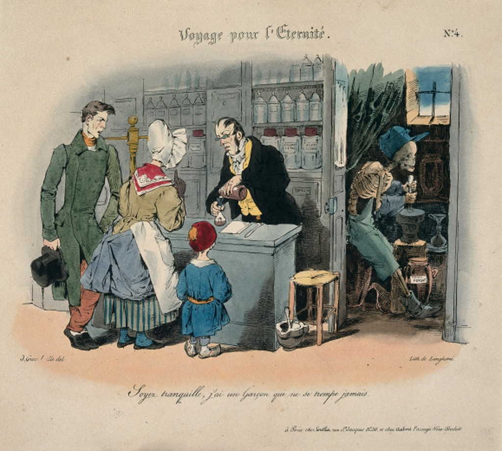

One may accurately point out that in the current opioid crisis, the first wave of addiction and overdose was indeed set off by a pursuit of pain relief shepherded by physicians and pharma. 19th-century matronly morphine addiction was also mostly iatrogenic. Which leads us into another set of questions: Who gets to participate in the culture of medication? Who gets to be prescribed, rather than proscribed, into addiction? Who gets to descend from licit to illicit substance use? Who has access to experts, and therefore is not expected to have known any better?
